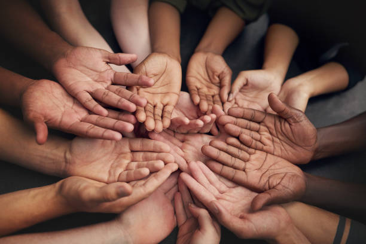
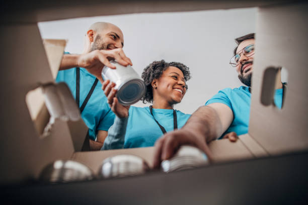
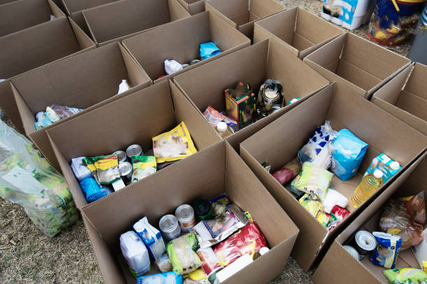

Seja parte da mudança
Conheça nossas ações e veja como você pode colaborar com a ONG Caminho de Volta.



Redes Sociais
Nos acompanhe e compartilhe esperança:
Dignidade, esperança e oportunidades | Fundada em 2020
Conheça nossas ações e veja como você pode colaborar com a ONG Caminho de Volta.
Nos acompanhe e compartilhe esperança: